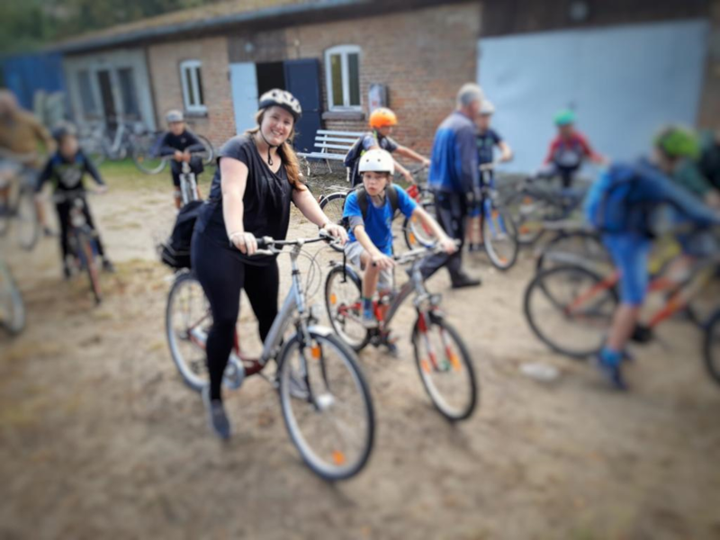

Na klar, komme ich mit!
Klassenfahrtbetreuung
Fahrtenbetreuung auf Kita-, Hort- und Klassenfahrten für Kinder und Jugendliche mit Typ-1-Diabetes

Fahrtenbetreuung auf Kita-, Hort- und Klassenfahrten für Kinder und Jugendliche mit Typ-1-Diabetes
Die AOK Gesundheitskasse unterstützte dieses Projekt der DDH-M mehrjährig. Für die Inanspruchnahme des Services „Fahrtenbetreuung“ der DDH-M bedarf es keiner Mitgliedschaft bei DDH-M. Jedoch hilft jeder Mitgliedsbeitrag und jede Spende, dass Diabeteskinder eine unbeschwerte Zeit mit ihren Spiel- und Schulgefährten erleben können.
Diabetes Typ 1 bei Kindern ist eine komplexe Erkrankung und benötigt einiges an Wissen, Aufmerksamkeit und Erfahrung für eine gute Diabetes-Betreuung durch das Kind selbst oder den Erwachsenen, wenn das Kind diese Verantwortung noch nicht vollständig übernehmen kann.
Oftmals trauen sich Verantwortliche aus dem Kita- oder Schulbereich aus diesem Grund nicht zu, betroffene Kinder bei mehrtätigen Fahrten zu betreuen, da die Risiken teilweise nicht überschaubar seien.
Fahrten mit Kindern sind besondere Erlebnisse, wie schnell ist das Blutzuckermessen vergessen und Diabetes sowieso. Die Pädagogen müssen alle Kinder im Blick haben, den ganzen Tag in fremder Umgebung und bei Aktionen. Gerade die nächtliche Blutzuckerkontrolle ist deshalb nicht zumutbar.
Das schließt Kinder mit Diabetes oft aus, an Fahrten oder Sportevents teilzunehmen oder nur zum nächsten Tobeplatz mitzudürfen.
Durch die Möglichkeit, eigens für diese Kinder eine Betreuungsperson zu stellen, wird das Selbstwertgefühl der jungen Betroffenen gestärkt und gleichzeitig der Umwelt vermittelt, dass ein Leben mit der Stoffwechselkrankheit kein Ausschlusskriterium sein muss. Das trägt zu einer besseren Integration bei und zu mehr Selbstvertrauen bei den Betroffenen.
Sie schreiben eine E-Mail direkt an die Projektleiterin Kathleen Brockelmann. Teilen Sie darin den Namen und das Alter Ihres Kindes mit, ebenso sind die Diabetes-Therapie und Begleiterkrankungen wichtig, auch wann und wohin die Fahrt der Schulklasse bzw. Kita-, Hortgruppe geht. Wichtig ist zu wissen, was kann das Kind schon, wo benötigt es Hilfe. Der E-Mail folgt dann auch ein Telefonat, wo Einzelheiten geklärt werden können. Kann ein Betreuer gestellt werden, trifft sich dieser mit dem Kind/Jugendlichen und den Eltern zu einem Vorgespräch, ggf. zu einem Telefongespräch. Sind sich alle einig, gibt es ein weiteres Gespräch mit den verantwortlichen Lehrern, dem Kind, den Eltern und dem Betreuer, um die Einzelheiten abzusprechen. Inzwischen ist es notwendig, die Kostenübernahme bei den Behörden zu beantragen. Planen Sie bis zu drei Monaten an Vorlaufzeit ein.
Kann ein Betreuer gestellt werden, trifft sich dieser mit dem Kind/Jugendlichen und den Eltern zu einem Vorgespräch, ggf. zu einem Telefongespräch. Sind sich alle einig, gibt es ein weiteres Gespräch mit den verantwortlichen Lehrern, dem Kind, den Eltern und dem Betreuer, um die Einzelheiten abzusprechen. Inzwischen ist es notwendig, die Kostenübernahme bei den Behörden zu beantragen. Planen Sie bis zu drei Monaten an Vorlaufzeit ein.

Die Karte zeigt Helfer-Herzen in Ihrer Region. Viele fahren gern für eine Betreuung zu Ihnen. Zögern Sie nicht, Ihre Anfrage zu stellen oder selbst ein Helfer-Herz für Ihre Region zu werden.
Durch die Möglichkeit, eigens für ihr Kind eine Betreuungsperson zu stellen, wird das Selbstwertgefühl der jungen Betroffenen gestärkt und gleichzeitig der Umwelt vermittelt, dass ein Leben mit der Stoffwechselkrankheit kein Ausschlusskriterium sein muss. Das trägt zu einer besseren Integration bei und zu mehr Selbstvertrauen bei den Betroffenen.
Denn leider werden Kinder mit Diabetes noch oft ausgeschlossen, an Fahrten oder Sportevents teilzunehmen oder nur zum nächsten Tobeplatz mitzudürfen.
Karte öffnen
Zur Anmeldung„Die Lehrerin hat mir heute erzählt, dass unser Sohn im ganzen Schuljahr nicht so gelöst war, wie bei dem Ausflug. Der Betreuer hat ihm diese Sicherheit gegeben. Es hat mega geklappt, so gute Werte hatte unser Sohn noch nie und die beiden haben sich super verstanden.“
Frau S. / Mutter von Caspar 8 Jahre